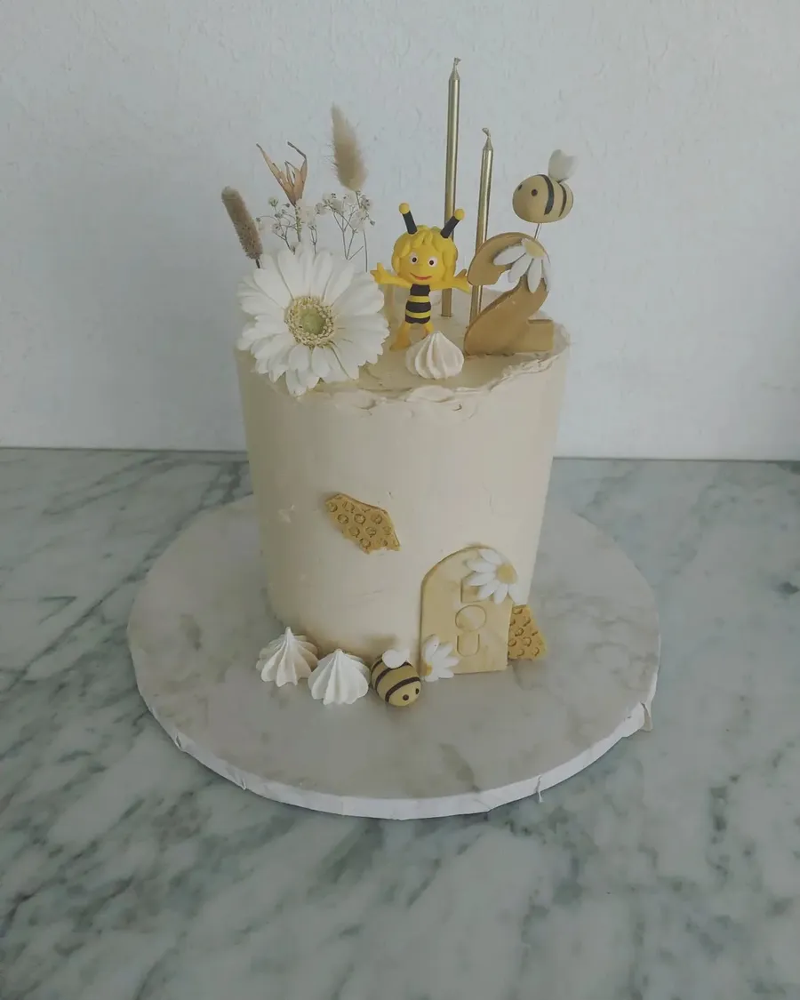
Themataarten
Voor elke gelegenheid, in jouw thema en jouw kleuren. Afgewerkt met een luchtige crème.
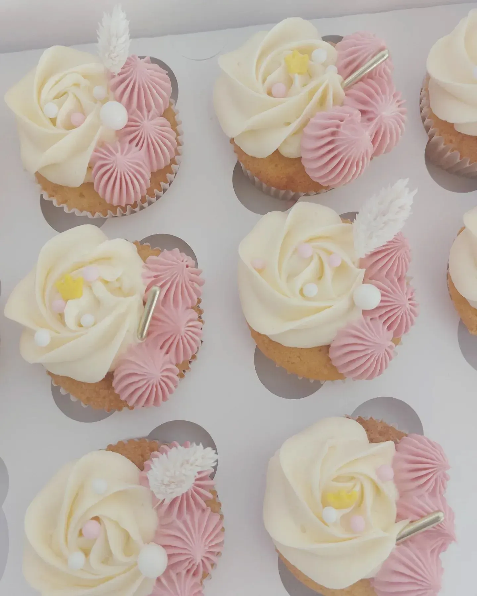
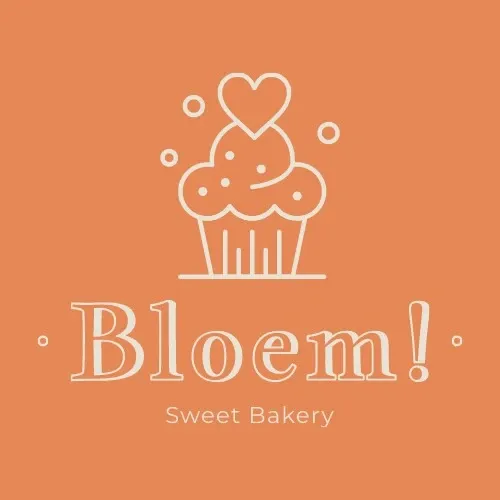
Bestel je taartThemataarten, cupcakes en vers gebak, van A tot Z zelf gemaakt. Zonder kleur- en smaakstoffen, wel met heel veel liefde.
Verjaardag, babyshower of gewoon een zondag. Alles wordt op maat gemaakt, zodat je altijd een taart hebt die niemand anders heeft.

Voor elke gelegenheid, in jouw thema en jouw kleuren. Afgewerkt met een luchtige crème.
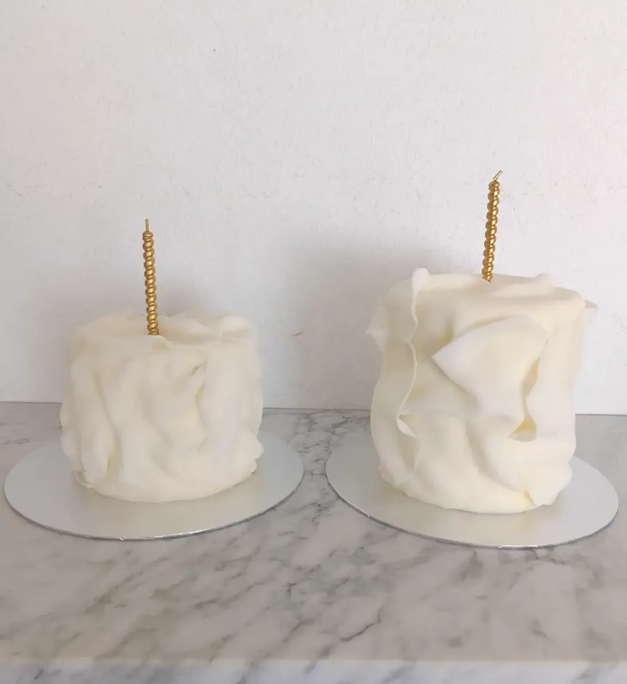
Een giant cupcake of naked cake, zodat je kleintje er eens helemaal op los kan gaan.
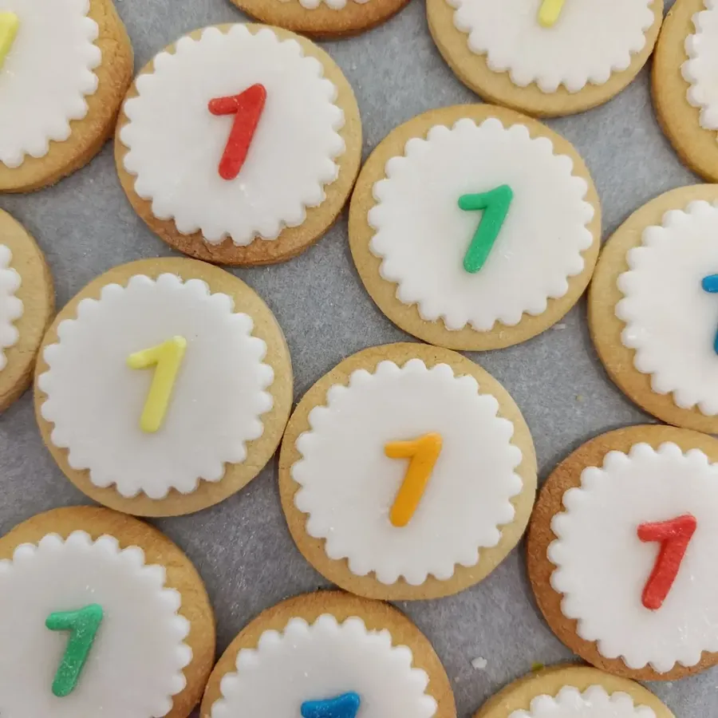
Met of zonder rolfondant, in thema of met tekst. Leuk als bedankje of traktatie.
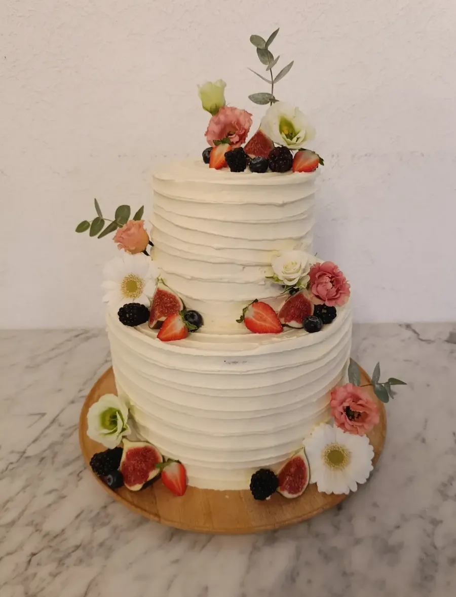
Cheesecakes, brownies, carrot cake en wat er die week vers in de toonbank ligt.
Een taart moet niet alleen indruk maken op de foto. Daarom bak ik met verse, eerlijke producten en zonder kleur- of smaakstoffen. Enkel de Red Velvet krijgt een beetje rode kleurstof.
Glutenvrij, lactosevrij of suikervrij? Dat kan, vraag het gerust.
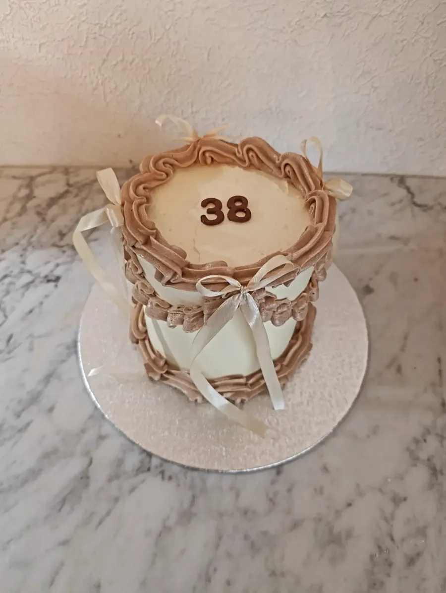
Ruches, strikjes, bloemen of felle kleuren: elke taart vertelt iets over het feest waarvoor ze gemaakt is.
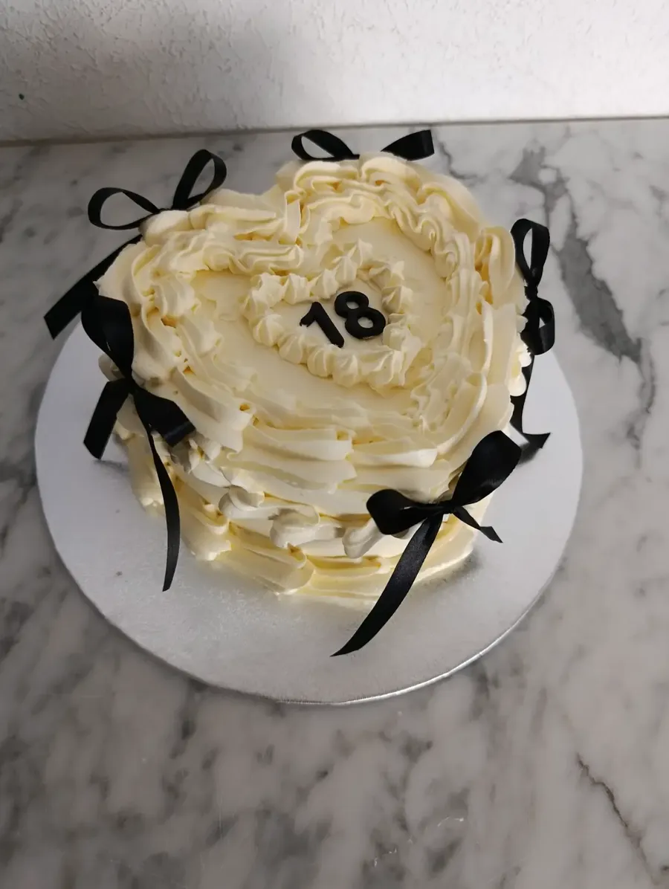
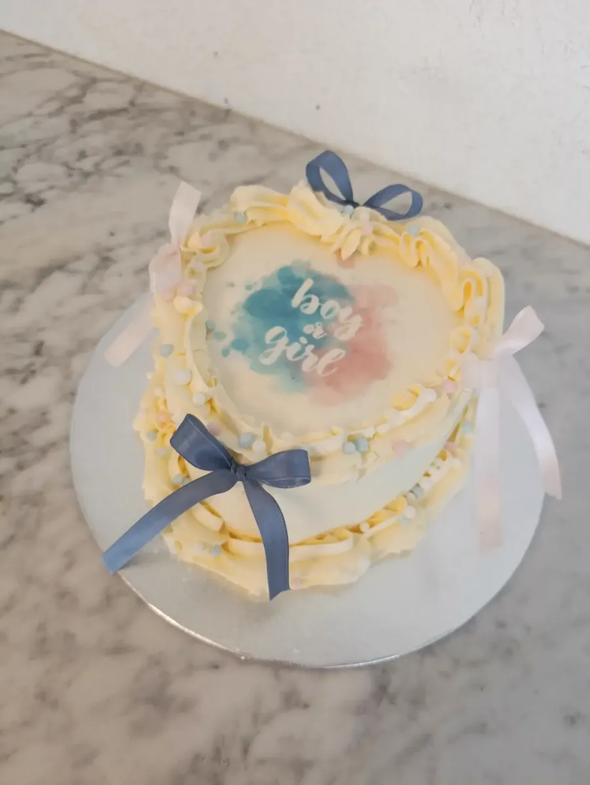
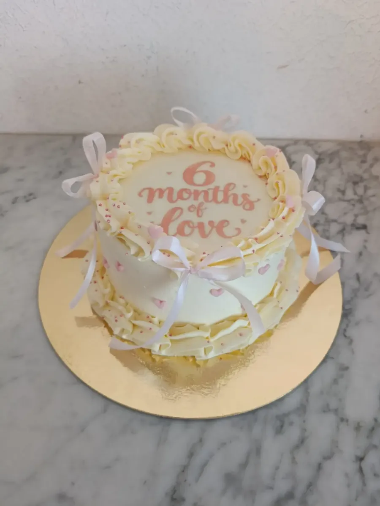
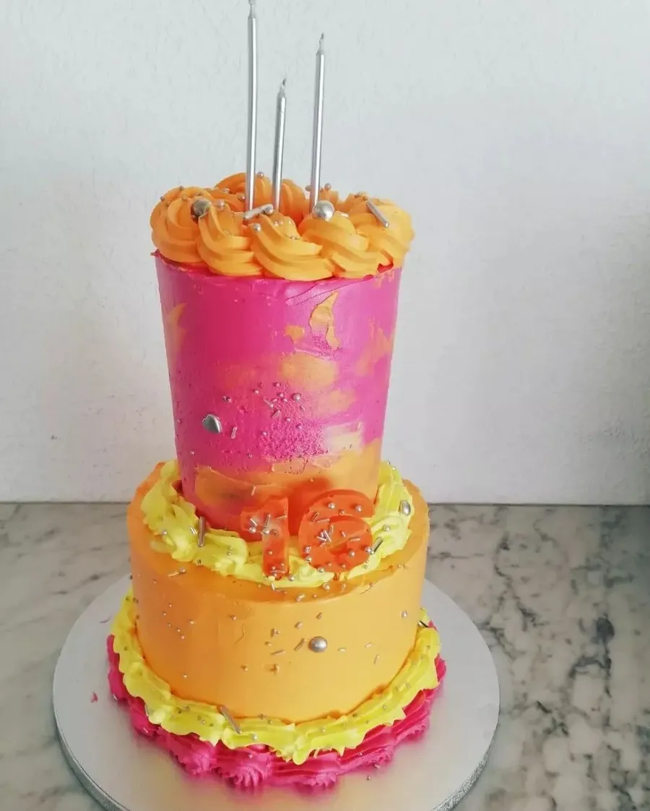
Bestel op tijd: het ene weekend zit sneller vol dan het andere. Een maand op voorhand is zeker aangeraden.
Vertel wat je viert, voor hoeveel personen en welk thema je in gedachten hebt. Een voorbeeldfoto ter inspiratie mag altijd.
Je haalt je taart op in Sint-Eloois-Vijve, mooi ingepakt voor onderweg. Betalen kan cash of met Payconiq.
Drie reviews, letterlijk zoals ze op Google staan.
★★★★★De meest heerlijke taarten ooit!! Daarnaast is de eigenaresse de liefste dame die er bestaat! Ze heeft last-minute nog een bestelling voor me kunnen regelen. Mijn redder in nood! Ik beveel haar absoluut aan!!
★★★★★Superlekkere en heel originele taarten. Lore is heel toegankelijk, waardoor de service perfect op maat en heel persoonlijk verloopt.
★★★★★De taart en de service waren geweldig! De frambozen vulling was enorm lekker Dankjewel dat je dit op korte tijd hebt kunnen erbij nemen
In de winkel vind je een wisselend assortiment vers gebak, zelfgemaakt van begin tot einde. Wat er ligt, hangt af van de verse producten van die week.
Voor koffiebars, restaurants en bedrijven: het hele aanbod kan ook in jouw huisstijl, met of zonder logo. Stuur gerust een berichtje.
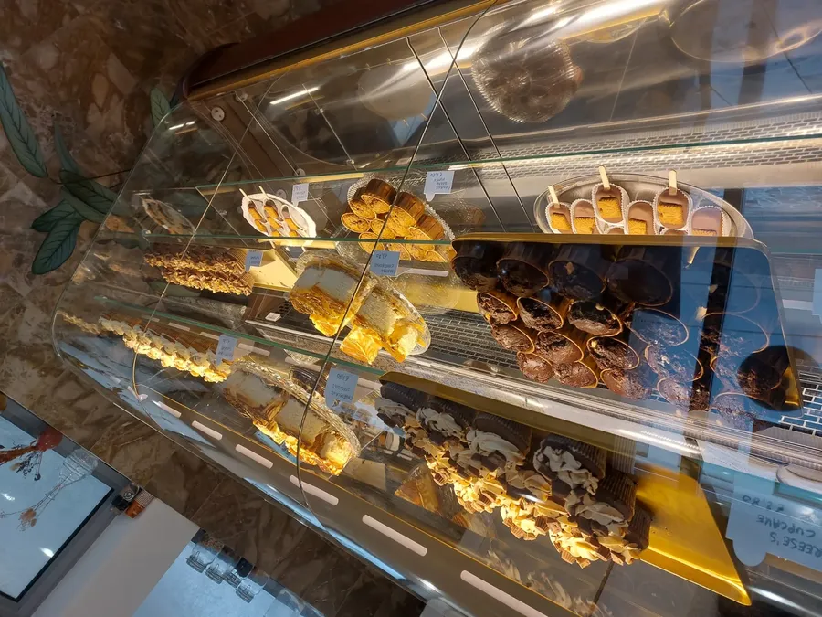
Ik maakte deze demo voor jullie om te tonen wat er kan. Na een kort gesprek maak ik er iets veel persoonlijkers van, helemaal naar jullie wens.
Vrijblijvend. Ik kom langs of we bellen.
Op maat, op jullie eigen domein.
Geen voorschot. Jullie betalen pas als alles klaar is.
Hosting, domeinnaam en kleine wijzigingen, zoals nieuwe openingsuren.
Omdat een voorbeeld meer zegt dan een mail. Zo zien jullie meteen wat er kan, en het kost jullie niets.
Nee. Het gesprek is vrijblijvend. Vinden jullie het niks, dan is het daarmee gedaan.
Na ons gesprek staat jullie site binnen 10 tot 14 dagen online.
Zeker. Jullie domeinnaam kan gewoon blijven, de nieuwe site komt in de plaats van de oude.
Nee, dat doe ik op basis van ons gesprek. Eigen foto's zijn mooi meegenomen, maar niet nodig om te starten.